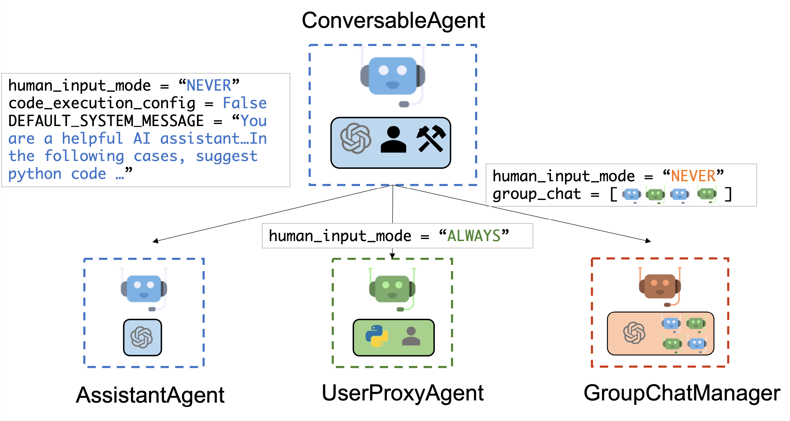
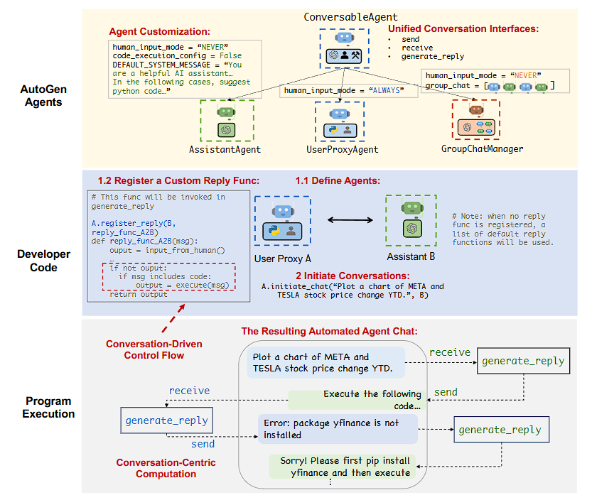
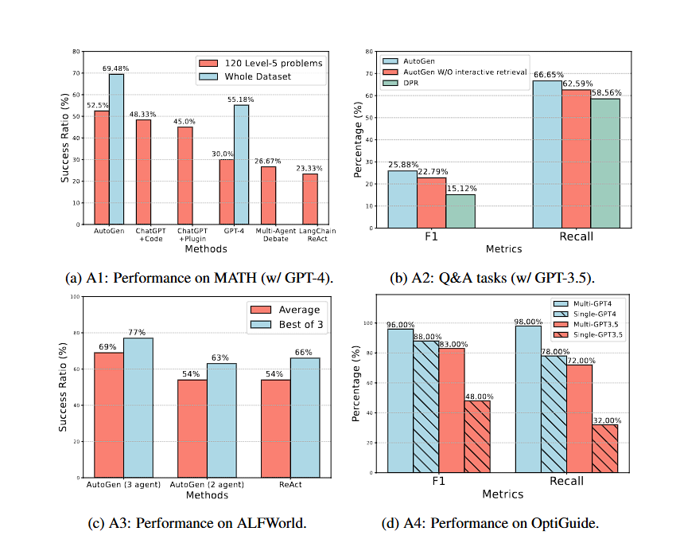
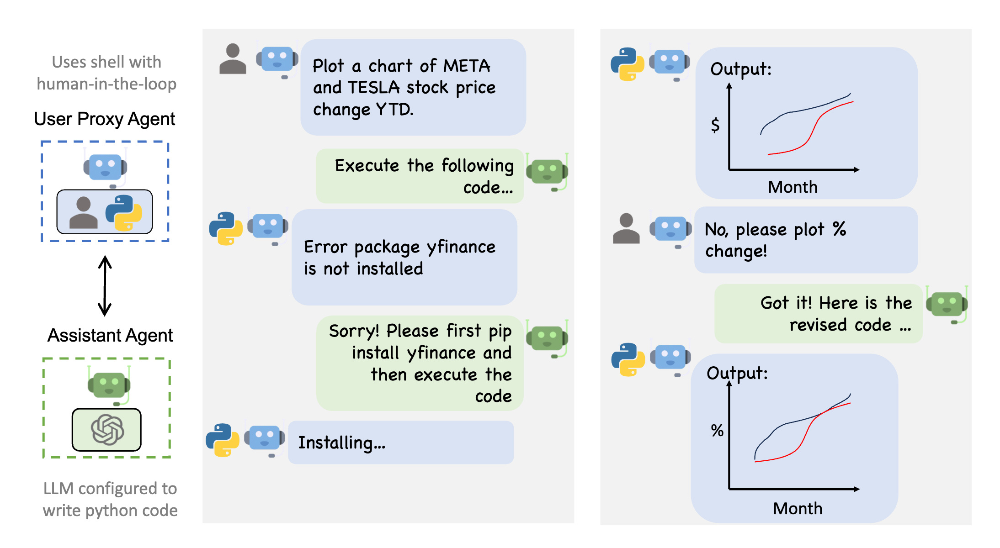

AutoGen-multiple agents framework
AutoGen：multiple agents framework
AutoGen 提供了一个统一的多智能体对话框架，作为使用基础模型的高级抽象。它具有功能强大、可定制和可对话的代理，通过自动代理聊天将 LLM、工具和人类整合在一起。 通过自动化多个能力强的代理之间的聊天，可以轻松使它们集体自主执行任务，或者在人类反馈下执行任务，包括需要通过代码使用工具的任务。
该框架简化了复杂 LLM 工作流的编排、自动化和优化。它最大化了 LLM 模型的性能并克服了它们的弱点。它使基于多智能体对话的下一代 LLM 应用程序的构建变得轻而易举。

主要特点
AutoGen 抽象并实现了旨在通过智能体间对话解决任务的可对话智能体。具体来说，AutoGen 中的智能体具有以下显著特点：
- 可对话：AutoGen 中的智能体是可对话的，这意味着任何智能体都可以发送和接收来自其他智能体的消息，以启动或继续对话。
- 可定制：AutoGen 中的智能体可以定制，以整合 LLM、人类、工具或它们的组合。
AutoGen
设计与实现要点
下图显示了 AutoGen 中内置的智能体。

AssistantAgent的设计目的是充当人工智能助手，默认情况下使用 LLM，但不需要人类输入或执行代码。当收到信息（通常是需要解决的任务描述）时，它可以编写 Python 代码（在 Python 代码块中）供用户执行。在底层，Python 代码由 LLM（如 GPT-4）编写。它还能接收执行结果，并提出修正或错误修复建议。它的行为可以通过传递新的系统消息来改变。UserProxyAgent在概念上是人类的代理智能体，默认情况下在每个交互轮次征求人类输入作为智能体的回复，并且也有执行代码和调用函数的能力。当UserProxyAgent检测到接收到的消息中有可执行的代码块且没有提供人类用户输入时，它会自动触发代码执行。
实现原理

上图说明了如何使用 AutoGen 对多代理对话进行编程。最上面的子图展示了 AutoGen 提供的内置Agent，这些Agent具有统一的对话界面，并且可以自定义。中间的子图展示了使用 AutoGen 开发具有自定义回复功能的双Agent系统的示例。底部的子图展示了程序执行期间双Agent系统产生的自动代理聊天。
核心就是利用多个智能体互相对话来推进任务完成。
性能

A1-A4四个应用的性能。 (a)表明，AutoGen的Agent可用于实现数学解题任务中最具竞争力的性能；(b)表明，AutoGen可用于实现有效的检索增强，并实现新颖的交互式检索功能，以提高问答任务的性能；©表明，AutoGen可用于引入3 Agent系统，以提高ALFWorld的性能；(d)表明，多Agent设计有助于提高需要保障措施的编码任务的性能。
Demo

这里给出了一个比较简单的，两个Agent之间通过对话实现代码开发与图表绘制任务
此外官网也给出了很多案例：https://microsoft.github.io/autogen/0.2/docs/Examples/#automated-multi-agent-chat
其中也有Demo关于 通过代码生成、执行和调试自动完成任务 https://microsoft.github.io/autogen/0.2/docs/notebooks/agentchat_auto_feedback_from_code_execution
AutoGen Studio
由 AutoGen 提供支持的界面 AutoGen Studio。通过它，可以：
通过点击、拖放界面声明式地定义和修改代理和多代理工作流（例如，可以选择两个代理的参数，它们将进行通信以解决任务）。
使用用户界面与指定的代理创建聊天会话并查看结果（例如，查看聊天记录、生成的文件和所用时间）。
为代理明确添加技能并完成更多任务。
Reference
https://microsoft.github.io/autogen/0.2/docs/Getting-Started